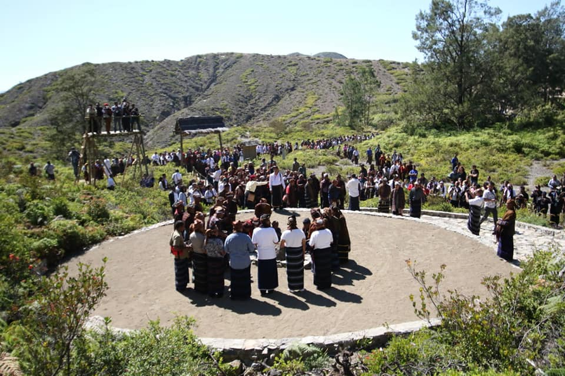

1. The charm of the beauty of Lake Kelimutu is inseparable from the three-colored lakes whose colors can change and also the development of myths that have been believed by local residents. The change in the color of the three lakes is caused by the mineral composition contained in the lake.
The three lakes are named Tiwu Ata Polo (red lake), Tiwu Nua Muri Koo Fai (blue lake) and Tiwu Ata Mbupu (white lake). meaning according to its name. Tiwu Ata Polo adalah tempat untuk jiwa-jiwa yang telah meninggalkan dunia bagi orang yang semasa hidupnya melakukan kejahatan. Danau yang bernama TIwu Nua Muri Koo Fai sebagai tempat bagi jiwa muda mudi yang telah meninggal. Sedangkan Tiwu Ata Mbupu tempat berkumpulnya jiwa orang tua yang telah meninggal.
For those of you who like to fill your Instagram feed with amazing natural views, this three-colored Kelimutu Lake is a worthy choice for you to visit. Make sure you invite the closest people such as family, friends or girlfriends to share the beauty of Lake Kelimutu whose charm is well known to foreign tourists.
Lake Kelimutu, which is also known as the three-colored lake, provides a natural view that spoils the eyes of every tourist who visits with the sparkling colors of the water. For those of you who like to enjoy the sunrise, you can visit these tourist attractions with your family or friends. Let's get to know the beauty of Kelimutu Lake and the tourist attractions around it.
2. Enjoying Sunrise at the Peak of Kelimutu
Apart from being presented with a view of the three colored lakes that are enjoyed from the top of Lake Kelimutu, you can also wait for the dawn to appear on the sidelines of the hill while enjoying your favorite drink such as coffee or hot tea which is sold around. In order not to miss the sunrise moment, don't forget to come to the top of Kelimutu before sunrise.

3. Pati Ka Festival
This festival is an annual customary ritual held every August 14 by the Lio tribe. Pati Ka has the meaning of giving food, namely giving offerings to the ancestors of Lake Kelimutu. The Lio tribe believes that the lake is the final resting place for souls who return after their journey of life ends.
In this ritual the elders of the Lio tribe wear traditional clothes in the form of woven sarongs and headbands. The procession of this traditional ceremony begins with the recitation of prayers by the elders of the Lio tribe. The reading of the prayer is to bless the food and drink that will be offered to the ancestors. Food and drinks served in bowls made of clay consist of brown rice, pork, coffee and water. The entourage carrying plates of offerings lined up neatly led by the traditional elders to the Spirit Stone, while sounding the gong every time they stepped on the steps.
Arriving at the Spirit Stone, the traditional elders and the entourage carrying offerings sat in a circle at the gathering place for the spirits. Furthermore, the entourage began the ritual by praying for the ancestors. After saying the prayer bowl offerings in the form of food and drink that they bring for the ancestors, and the rest of the food is eaten together.
Then the traditional elders climbed onto the Spirit Stone to sing traditional Lio tribal songs and were welcomed by the Gawi dance. This dance also signifies that the Pati Ka ritual is being carried out properly. This dance symbolizes that the people of Ende will work together in protecting nature. This ritual is held as a form of expression of gratitude for the blessings received last year.